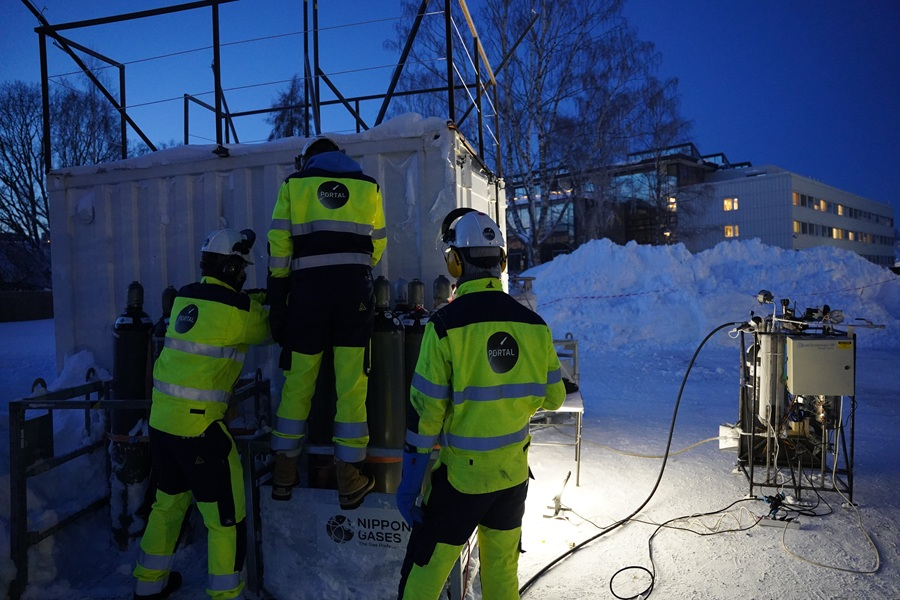
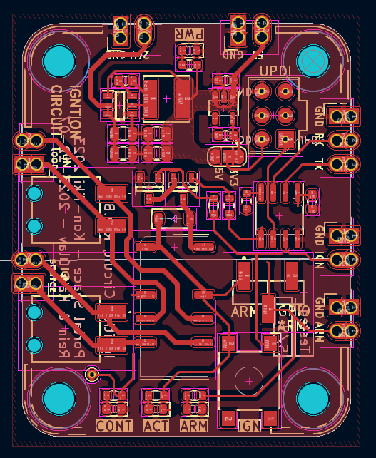
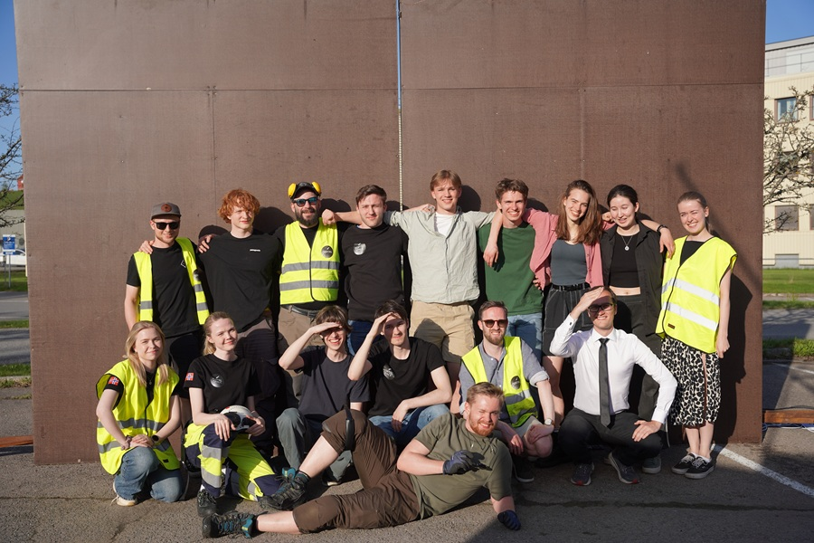

Portal Space

Portal Space is a student organization based at the University of Oslo which provides students with the resources, tools, and knowledge needed to tackle rocket engineering. Students are assigned to specific projects with the combined goal of building a liquid fueled rocket engine, and ultimately a working rocket. Though Portal Spaces' ambitions are not quite those of NASA, building a rocket engine is still a tall task, made only possible by an impressive team of students and a solid management.
I joined Portal Space as part of the electronics team in January 2023. The induction constisteted of dense courses on circuitry and embedded software, by the end of which I felt like I knew less than I did when I started. We then got thrown into projects, most of us with an older member to taking the lead roles who we could lean on. Through guidance and hands-on experience myself and the other newcommers started building confidence, until eventually new newcommers arrived, and it was now our turn to help them get settled.

The first proper project I got to work on from beginning to end was making the ignition system. The early stages were a fun mess of experimentation and failure. Sending 24V through a big chunk of wire until its hot enough to ignite a cup of ethanol seems like a solid idea until you discover what crygenic means when -180°C oxygen is leaking through the main valve. Eventually though, something stuck. Namely shoving a smaller solid rocket motor into the combustion chamber. What could wrong?
Well there were some concerns. Showing that an idea can work is only the beginning after all. The remaining stages of development were more directed, and we had a further pressure to do things right. We were facing questions such as: How can we minimize the risk of a system failure? How do we ensure the system never activates when we don't want it to? How do we prevent soot from clogging the expensive injection plate? Luckily, difficult problems are great conversation starters at Portal, and with the help of the rest of the team we found some great solutions.
As several projects start coming together you have to work on combining them to work as one big system, like synchronizing cpu threads after a big work load, until the system is deemed ready for a hotfire. Participating in a hotfire, i.e. a full-on engine test, is undoubtedly the most exciting thing you get to do at Portal. You travel a bit out of the city and spend a couple hours setting everything up, double checking everything. A callout from mission control to change the flag from green to yellow, and then to red. An overly long and dramatic countdown: 10, 9, 8, 7, 6, 5, 4, 3, 2, 1 ... and then, nothing.

The reality of working on such a difficult project is that even after you've tested everything, double checked everything, there will still be problems. Most hotfires did not go as planned. We often went home a bit late, and perhaps a bit dissapointed; had a look at the data, and discussed with the team leads trying to figure out what went wrong. Next week we'd make sure to fix all the issues from the previous hotfire, both minor and major, until we were ready to try again.
After a couple failed hotfires you start to lower your expectations. You realize that the fun part is hanging out with friends. Being outside and nerding out about software, electronics, and valves. In my three years there I had the pleasure of working with some of the nicest and most driven people I've ever met. Most days we'd got nothing, save the the occational flamethrower, and that was fine. But once in a while the stars align...